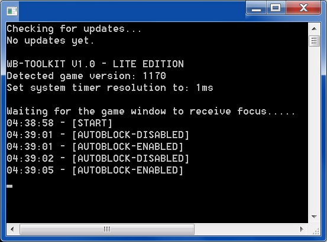

M&B Warband [1.170/1.174] Toolkit
Это облегченная версия оригинального взлома, которую каждый может использовать бесплатно без каких-либо ограничений. Наслаждайся этим.
СКАЧАТЬ v2.0 (1.69 MB): WB-Toolkit-Lite_v2.exe
Если ваша версия игры с ней не работает - скачайте exe последней версии. (5 MB): mb_warband.exe
Или патч последней версии от Taleworlds (315 MB): mb_warband_upgrade_1100_to_1174.exe
СКРИНШОТЫ:


КАК ИСПОЛЬЗОВАТЬ АВТОБЛОК:
1. Запустите "mb_warband.exe" (убедитесь, что имя правильное) от имени администратора и дождитесь полной загрузки игры;
2. Убедитесь, что для параметра «Направление блока управления» в параметрах установлено значение «Автоматически»;
3. Запустите «WB-Toolkit-Lite.exe» от имени администратора (это необходимо, потому что программа взламывает память игрового процесса для активации автоблока);
4. Присоединяйтесь к любому серверу;
5. Нажмите кнопку «Caps Lock», чтобы включить / выключить автоблокировку;
6. Чтобы использовать автоблокировку, просто удерживайте правую кнопку мыши.
РАСШИРЕННЫЙ РЕЖИМ КАМЕРЫ:
Вы можете поворачивать камеру на любой угол вверх и вниз.
Режим увеличения, уменьшение режим и расстояние от камеры от третьего лица можно настроить на любое значение.
Нажмите клавишу «F4», чтобы включить расширенную камеру (когда вы находитесь на сервере);
Чтобы включить режим увеличения, удерживайте клавишу «Левый Shift» и «Правую кнопку мыши»;
Чтобы включить режим уменьшения масштаба, удерживайте «левую кнопку управления» и «правую кнопку мыши»;
Чтобы изменить расстояние до камеры от третьего лица, удерживайте клавиши «+» или «-».
ФУНКЦИЯ ОТКЛЮЧЕНИЯ ТУМАНА:
Чтобы отключить туман на любой карте, просто нажмите клавишу «F5».
Часто задаваемые вопросы:
Q: Работает ли он для модуля «ххх»?
A: Он должен работать с любым модулем, но тестировался только для Native и NW.
Q: Это вирус?
A: Это не вирус, но поскольку это исполняемый файл, некоторые антивирусы могут предупредить вас об опасности.